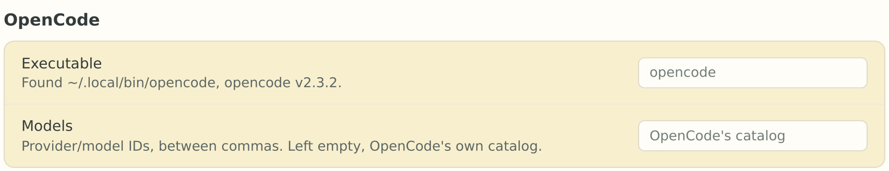

Perch
PerchRepositories and local roots
Perch reads ~/.perch/config.toml (or $PERCH_HOME/config.toml). A repository entry can name a GitHub repository, a local clone, or both.
poll_interval_secs = 60
[[repo]]
github = "slatedb/slatedb"
name = "slatedb"
root = "~/Code/slatedb"Set name for the sidebar label and root to the path of your clone. Perch scans that clone for local branches and worktrees. Scanning leaves GitHub history alone. A worktree without a PR appears under Authored. Once it has a PR, the PR author determines where it appears. The base branch has no row. A local-only repository appears as local/<name> and supports worktrees and agents.
To keep a discovered worktree out of the sidebar, choose Hide. Find it under Recent and choose Unhide to bring it back. Deleting its row only hides it until the next scan because Perch leaves the checkout on disk.
If you rename a branch with git branch -m, Perch uses Git’s reflog to keep its threads, runs, and hidden state together. Switching branches, renaming onto a branch with its own row, or renaming a branch attached to a PR leaves the history with the old row.
Work, language servers, and appearance
Use [work] for new worktree defaults and [repo.work] for permissions on a particular repository.
[work]
branch_prefix = "chris/" # before a branch name Perch fills in
approvals = "auto" # or "ask"; see Approvals
[[repo]]
root = "~/Code/perch"
[repo.work] # what a Work run here may reach
approvals = "never" # over [work]'s, for this repository only
write = ["~/.cargo/registry", "~/.cargo/git", "~/.cargo/.package-cache"]
network = ["index.crates.io", "static.crates.io"]
trust = false # true loads the repository's own agent configThe write and network lists start empty. Grant write access to the specific cache directories an agent needs. For example, granting the whole ~/.cargo directory would also let it change your Cargo configuration and binaries. Perch skips entries that include your home directory or ~/.perch, and paths in or containing a configured root’s .git directory. It reports skipped entries at startup.
When you leave an item, Perch keeps up to two idle language servers for ten minutes so you can return without waiting for the workspace to load. Set the combined memory budget under [lsp].
[lsp]
max_memory_mb = 8192 # the defaultOver budget, Perch stops the oldest idle server first. Servers for open views can use more than the budget on their own.
Use [display] to change the size of the interface. Restart Perch to see the change.
[display]
zoom = 1.0 # the default; 0.75 to 2.0
code_font_size = 12 # the default; 8 to 32zoom scales the whole window. For example, 1.25 makes text, icons, and spacing 25% larger. code_font_size sets the editor text size before zoom, including headers, hovers, and references. Comments and agent replies follow the window zoom.
Use [ui] for the theme, light or dark appearance, and code font.
[ui]
appearance = "dark" # "light", "dark" or "system", the default
theme = "warm-linen" # "classic", "warm-linen" or "blue-mist"
code_font = "Fira Code" # off macOS onlyChoose a theme in Settings → Appearance to preview and apply its palette. Each theme has a light and a dark version. Perch starts with Warm Linen in a fresh Perch home and uses Perch Classic when theme is absent.
By default, Perch follows the system appearance. On Linux under X11 it starts light because X11 does not supply the setting. Choosing light or dark applies immediately. Choosing "system" applies the current system appearance immediately. Restart Perch to follow subsequent system changes.
On macOS, the code font is SF Mono. On Linux, set code_font and restart. Otherwise Perch uses the first installed font from JetBrains Mono, DejaVu Sans Mono, Noto Sans Mono, Liberation Mono, Adwaita Mono, and Droid Sans Mono.
Loading a Rust or Java project can run code from the checkout. rust-analyzer runs build scripts and proc macros and reads .cargo/config.toml and rust-toolchain.toml. jdtls can run Gradle or Maven. On your own work in a configured repository, Perch starts these servers automatically. That includes branches in your local root, even if you checked one out from a fork, the default branch for an issue, and your PRs from the configured repository or your fork.
On another person’s PR, a branch created from it, or an unconfigured repository, Perch asks first. Choose Trust and start to trust this item, including future commits pushed to it. Deleting the item clears that decision. Branches you created from PRs before upgrading may ask once.
To trust one server throughout a repository, select its Always trust checkbox when you confirm. The Worktree row also offers Trust and Start, Always Trust, and Stop Trusting. Revoking repository trust stops that server on items with no other trust decision. Go and TypeScript servers can start without this prompt. To allow all language servers across a repository, including other people’s PRs, use the following setting.
[[repo]]
github = "slatedb/slatedb"
[repo.lsp]
trust = true # false, the default, asks as above~/.perch contains the database, avatars, managed clones, worktrees, and agent state. The database includes local conversations and review drafts. GitHub can supply fresh notifications, but it has no copy of those local records.
Database upgrades keep conversations, agent attempts, session IDs, and activity history. If an upgrade fails, the original database stays in place. Perch refuses to open a newer or unsupported format.
All config.toml keys
Settings changes only the keys you edit and preserves comments. Most edits apply within seconds. Restart the app for [display] or [ui] code_font changes, and restart the engine for worktrees_dir. Edit the file directly to change token, worktrees_dir, or an existing repository’s github and root.
| Key | Default | What it does |
|---|---|---|
token | none | GitHub token to use if the process environment and gh provide none. Perch checks again if the token is missing or GitHub rejects it. |
poll_interval_secs | 60 | Shortest time between inbox polls; GitHub can ask for longer |
github_host | none | A GitHub Enterprise host whose remotes count as GitHub |
[agent] binary | "claude" | Claude Code executable, a name on PATH or a path |
[agent] model | "opus" | Model the composer's picker starts on |
[agent] effort | "high" | Claude Code's default effort: low, medium, high, xhigh, max or ultra |
[agent] models | ["fable", "opus", "sonnet", "haiku"] | Claude models the picker offers |
[agent] max_concurrent_runs | 4 | Maximum simultaneous Claude Code runs. Other Claude runs wait. |
[agent] sandbox | true | Run Claude Code commands in its sandbox. See Without the agent sandbox. |
[agent.codex] binary | "codex" | Codex executable, a name on PATH or a path |
[agent.codex] effort | "high" | Codex's default effort |
[agent.codex] models | Codex's own list | Codex models the picker offers |
[agent.codex] max_concurrent_runs | 4 | Maximum simultaneous Codex runs |
[agent.codex] sandbox | true | Run Codex commands in its sandbox (read-only / workspace-write). Off uses danger-full-access. |
[agent.gemini] binary | "agy" | Antigravity CLI executable, a name on PATH or a path |
[agent.gemini] effort | "high" | Gemini's default effort |
[agent.gemini] models | agy's own list | Gemini models the picker offers |
[agent.gemini] max_concurrent_runs | 1 | Maximum simultaneous Gemini (agy) runs |
[agent.gemini] sandbox | true | Run Gemini (agy) print-mode commands in its terminal sandbox. See Without the agent sandbox. |
[agent.opencode] binary | "opencode" | OpenCode 2.3.0+ executable, a name on PATH or a path |
[agent.opencode] effort | "high" | OpenCode's default effort |
[agent.opencode] models | OpenCode's own list | Provider-qualified IDs from opencode models |
[agent.opencode] max_concurrent_runs | 4 | Maximum simultaneous OpenCode runs |
[work] branch_prefix | "" | Put before branch names Perch fills in, such as "chris/" |
[work] approvals | "auto" | Who answers a Work run's requests outside its sandbox: "auto" (the CLI's auto-reviewer, then you) or "ask" (you) |
[work] approval_timeout_mins | 15 in the app, 480 under perchd | Minutes a request to you waits before it is denied |
[prompts] ask | none | Additional preferences appended to Ask runs after Perch's framing and safety boundaries |
[prompts] work | none | Additional preferences appended to Work runs after Perch's framing and safety boundaries |
[prompts] review | none | Additional focus areas or rules appended to automated code reviews across all backends (per-run instructions still take precedence) |
[prompts] pr_summary | built-in default | Editorial instructions for automatic pull request description rewrites (Perch keeps its read-only, untrusted-data, and Markdown-only wrappers) |
[prompts] issue_summary | built-in default | Editorial instructions for automatic issue description rewrites (Perch keeps its read-only, untrusted-data, and Markdown-only wrappers) |
[prompts] pr_description | built-in default | Editorial instructions when drafting a new pull request's title and description (Perch keeps its read-only, untrusted-data, and output-format wrappers) |
[prompts] issue_draft | built-in default | Editorial instructions when drafting a GitHub issue from a pull request being closed (Perch keeps its read-only, untrusted-data, and output-format wrappers) |
[keybindings] action | the action's keys | Keys for an action by its id: a string such as "super+t", a list of them, or "" for none; see Keyboard shortcuts |
[ui] appearance | "system" | "light", "dark" or "system" |
[ui] theme | "classic" | "classic", "warm-linen" or "blue-mist". A fresh Perch home starts with "warm-linen". |
[ui] code_font | none | Code font off macOS; on macOS code is always SF Mono; applies after a restart |
[display] zoom | 1.0 | Scales the whole window, 0.75 to 2.0; applies after a restart |
[display] code_font_size | 12 | Code font size before zoom, 8 to 32; applies after a restart |
clone_root | ~ | Directory on the SSH host for repositories you add by name, such as "~/Code" |
worktrees_dir | $PERCH_HOME/worktrees (normally ~/.perch/worktrees) | Base directory for new Perch-managed branch worktrees. Applies after an engine restart. |
[remote] host | none | SSH host to use when there is no saved window session (for example "chris@devbox:2222"). Perch subsequently reopens each window in its last environment. |
[remote] command | none | Custom engine command for the host’s login shell, such as "perchd bridge". By default the app uploads and starts its bundled engine. |
[lsp] max_memory_mb | 8192 | Combined memory budget for language servers. Perch stops idle servers first. |
[[knowledge]] dir | required per entry | External directory relative to $PERCH_HOME/knowledge/ |
[[knowledge]] repos | every repository | Repositories whose agents may read this directory |
[[repo]] github | none | The repository's owner/repo on GitHub; leave out for a local-only repository |
[[repo]] name | the repo's name | Name shown in the sidebar |
[[repo]] root | none | Path to your local clone, where Perch finds branches and creates worktrees |
[[repo]] base | the remote's default | Base branch, when the remote doesn't say |
[[repo]] sync_history | false | Keep the repository's GitHub issues, pull requests and discussions available to agents |
[repo.work] write | [] | Extra directories Work runs may write, such as a package cache |
[repo.work] network | [] | Hosts Work runs may reach, such as index.crates.io |
[repo.work] approvals | [work] approvals | Overrides it for this repository; also takes "never", which allows every request |
[repo.work] trust | false | Load the repository's own .claude/, .mcp.json, .codex/ and .agents/ config for Work runs |
[repo.lsp] trust | false | Start rust-analyzer and jdtls on anything in this repository without asking |
The reference covers what each setting does in more detail.
Worktree directory
Add worktrees_dir as a top-level key in config.toml on the machine running the engine, then restart the engine.
worktrees_dir = "~/.herdr/worktrees"~ expands to the engine user’s home. Relative paths start at PERCH_HOME (usually ~/.perch). Changing this setting affects only new worktrees. Existing checkouts stay where they are, and Perch leaves unrelated directories alone.
GitHub history
Turn on Sync GitHub history in a GitHub repository's card under Settings → Repositories, or set sync_history = true in its [[repo]] entry on the engine's machine.
[[repo]]
github = "slatedb/slatedb"
root = "~/Code/slatedb"
sync_history = trueThe engine downloads open and closed issues, PRs, and their discussions into the repository archive. It refreshes at startup and about once an hour while the engine runs. You can close the desktop app while a remote engine continues syncing.
External knowledge
Add directories in Settings → Knowledge or in the engine's config.toml.
[[knowledge]]
dir = "discord/slatedb"
repos = ["slatedb/slatedb", "slatedb/slatedb-go"]
[[knowledge]]
dir = "notes"List GitHub repositories as owner/repo or local repositories as local/<name>. Names are case-insensitive. Omit repos to share the directory with every repository, or use an empty list to share it with none. In Settings, turning off All repositories starts with an empty list.
Put Markdown on the machine running the engine. An optional INDEX.md gives agents a starting point. Links to original messages or documents let them check a source. Use regular files and directories without symlinks or instruction files such as AGENTS.md, CLAUDE.md, or GEMINI.md. Perch reserves the top-level names perch and reviews.
Start a new Ask, Work, or Review session to use a newly shared directory. Perch treats its contents as untrusted reference material. You or the tool that supplies the files must keep them up to date.
Settings explains why a directory was skipped. Common reasons include a missing folder, a symlink or agent instruction file anywhere inside, more than 200,000 entries, or an agent that cannot accept the directory. The engine logs changes and caches each check for up to a minute. After a fix, try a new run once that minute has passed.
OpenCode
In Settings → Agents → OpenCode, check that Perch found the executable on the machine with your checkout. Leave Models empty to use OpenCode’s catalog, or enter the models you want in the picker.

Sign in on that machine with the command below, then restart Perch to refresh the picker. Perch uses its own OpenCode profile so an “always allow” decision from your terminal can’t approve a command in Perch.
perch_home="${PERCH_HOME:-$HOME/.perch}"
OPENCODE_DB="$perch_home/opencode/opencode.db" OPENCODE_CONFIG_DIR="$perch_home/opencode/config" opencode auth login --standaloneCustom provider configuration goes in $perch_home/opencode/config/opencode.json. OpenCode Zen also accepts OPENCODE_API_KEY in the engine's environment.
Ask and Review have read and search tools. Work allows worktree edits and sends shell commands through Perch's approval controls. Perch disables project configuration, plugins and MCP servers for these sessions. When the model offers the selected effort variant, Perch uses it. Otherwise OpenCode uses the model's default.
Environment variables and settings on an SSH host
PERCH_HOME contains the cache and logs. Only one engine can use a home at a time. If another engine owns the directory, Perch reports its process ID. Each engine reads config.toml on the machine where it runs.
PERCH_SSH selects the SSH program the desktop app uses for connections, engine uploads, and remote terminals. For example, it can name a wrapper that supplies -F <config>.
Set PERCH_IDLE_EXIT_SECS in the host’s login environment to change how long the app-started engine waits with no clients or active or queued agent runs. The default is 900 seconds.
In a remote environment, [ui], [display], [keybindings], and [remote] belong to the desktop app and use its local file. The engine reads all other settings from the host. Settings saves each change on the appropriate machine. Adding a repository or fixing the host’s token triggers the host checks again.